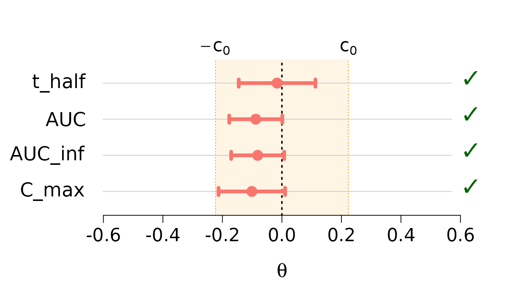

Average Equivalence Testing: Multivariate
Source:vignettes/average-equivalence-multivariate.Rmd
average-equivalence-multivariate.RmdIntroduction
This vignette extends univariate equivalence testing to the multivariate setting, where we test equivalence simultaneously across multiple parameters. This is common in:
- Bioequivalence studies with multiple pharmacokinetic parameters (AUC, C_max, t_half, etc.)
- Multivariate bioequivalence across different tissue layers or time points
- Quality control with multiple product characteristics
The Multivariate Problem
Instead of a single parameter , we now have a vector of parameters . We want to test whether all parameters simultaneously fall within their respective equivalence regions.
Available Methods
For multivariate testing, ctost() supports:
-
Unadjusted TOST
(
method = "unadjusted"): Standard multivariate TOST -
Alpha-TOST (
method = "alpha"): Adjusts significance level (Boulaguiem et al. 2025) -
Optimal cTOST (
method = "optimal"): Recommended - Best power (Insolia et al. 2025)
Note: Delta-TOST is not implemented for multivariate settings due to poor finite sample performance.
Statistical Framework
Model Setup
We assume:
where:
- is the -dimensional vector of estimated mean differences
- is the covariance matrix
- is the degrees of freedom
- denotes the Wishart distribution
Example 1: Pharmacokinetic Parameters
We use the ticlopidine dataset containing
pharmacokinetic parameters from a bioequivalence study.
Load and Explore Data
data(ticlopidine)
dim(ticlopidine)
#> [1] 20 4
head(ticlopidine)
#> t_half AUC AUC_inf C_max
#> 1 -0.53754869 -0.27634036 -0.35181658 -0.11308276
#> 2 0.59089709 0.27355003 0.32736142 0.36251520
#> 3 0.14547051 0.12543294 0.14683852 0.16868248
#> 4 -0.60282454 -0.46041725 -0.49165900 -0.67511707
#> 5 -0.08664339 -0.09831984 -0.07991007 -0.32912619
#> 6 -0.34985932 -0.33778740 -0.35680878 -0.02673381
summary(ticlopidine)
#> t_half AUC AUC_inf C_max
#> Min. :-0.60282 Min. :-0.46042 Min. :-0.49166 Min. :-0.75115
#> 1st Qu.:-0.25599 1st Qu.:-0.27976 1st Qu.:-0.25310 1st Qu.:-0.26242
#> Median : 0.03283 Median :-0.14554 Median :-0.11938 Median :-0.09968
#> Mean :-0.01632 Mean :-0.08781 Mean :-0.08147 Mean :-0.10113
#> 3rd Qu.: 0.20462 3rd Qu.: 0.09560 3rd Qu.: 0.09409 3rd Qu.: 0.16044
#> Max. : 0.59090 Max. : 0.55419 Max. : 0.51747 Max. : 0.48128The dataset contains 20 observations of 4 pharmacokinetic parameters:
-
t_half: Half-life -
AUC: Area under the concentration-time curve -
AUC_inf: AUC extrapolated to infinity -
C_max: Maximum concentration
Visualize the Data
# Pairwise scatterplot matrix
pairs(ticlopidine,
main = "Ticlopidine: Pairwise Relationships",
pch = 16, col = rgb(0, 0, 0, 0.5))The parameters show positive correlations, which the multivariate test accounts for through the covariance structure.
Compute Test Statistics
# Sample size and dimensions
n <- nrow(ticlopidine)
p <- ncol(ticlopidine)
nu <- n - 1
# Multivariate statistics
theta_hat <- colMeans(ticlopidine)
Sigma_hat <- cov(ticlopidine) / n
# Display results
cat("Sample size:", n, "\n")
#> Sample size: 20
cat("Number of parameters:", p, "\n")
#> Number of parameters: 4
cat("Degrees of freedom:", nu, "\n\n")
#> Degrees of freedom: 19
cat("Estimated differences:\n")
#> Estimated differences:
print(round(theta_hat, 4))
#> t_half AUC AUC_inf C_max
#> -0.0163 -0.0878 -0.0815 -0.1011
cat("\nEstimated covariance matrix:\n")
#>
#> Estimated covariance matrix:
print(round(Sigma_hat, 6))
#> t_half AUC AUC_inf C_max
#> t_half 0.006682 0.001924 0.002415 0.001707
#> AUC 0.001924 0.003194 0.003145 0.003388
#> AUC_inf 0.002415 0.003145 0.003191 0.003193
#> C_max 0.001707 0.003388 0.003193 0.005032Run Multivariate Tests
Standard Multivariate TOST
mv_standard <- ctost(
theta = theta_hat,
sigma = Sigma_hat,
nu = nu,
delta = log(1.25),
alpha = 0.05,
method = "unadjusted"
)
print(mv_standard)
#> ✖ Can't accept (bio)equivalence
#> Equiv. Region: |----------------0----------------|
#> t_half (-----------x----------)
#> AUC (-------x--------)
#> AUC_inf (--------x-------)
#> C_max (---------x---------)
#>
#> CIs:
#> t_half (-0.15767 ; 0.12503)
#> ✔
#> AUC (-0.18553 ; 0.00992)
#> ✔
#> AUC_inf (-0.17914 ; 0.01620)
#> ✔
#> C_max (-0.22379 ; 0.02154)
#> ✖
#>
#> Method: TOST
#> alpha = 0.05; Equiv. lim. = +/- 0.22314Alpha-TOST
mv_alpha <- ctost(
theta = theta_hat,
sigma = Sigma_hat,
nu = nu,
delta = log(1.25),
alpha = 0.05,
method = "alpha"
)
print(mv_alpha)
#> ✔ Accept (bio)equivalence
#> Equiv. Region: |----------------0----------------|
#> t_half (----------x----------)
#> AUC (-------x-------)
#> AUC_inf (--------x-------)
#> C_max (---------x---------)
#>
#> CIs:
#> t_half (-0.15011 ; 0.11747)
#> ✔
#> AUC (-0.18031 ; 0.00469)
#> ✔
#> AUC_inf (-0.17392 ; 0.01097)
#> ✔
#> C_max (-0.21723 ; 0.01498)
#> ✔
#>
#> Method: alpha-TOST
#> alpha = 0.05; Equiv. lim. = +/- 0.22314
#> Corrected alpha = 0.05908
cat("\nCorrected alpha:", round(mv_alpha$corrected_alpha, 4), "\n")
#>
#> Corrected alpha: 0.0591Optimal cTOST (Recommended)
mv_optimal <- ctost(
theta = theta_hat,
sigma = Sigma_hat,
nu = nu,
delta = log(1.25),
alpha = 0.05,
method = "optimal"
)
print(mv_optimal)
#> ✔ Accept (bio)equivalence
#> Equiv. Region: |----------------0----------------|
#> t_half (----------x----------)
#> AUC (-------x-------)
#> AUC_inf (-------x-------)
#> C_max (--------x---------)
#>
#> CIs:
#> t_half (-0.14520 ; 0.11256)
#> ✔
#> AUC (-0.17694 ; 0.00132)
#> ✔
#> AUC_inf (-0.17055 ; 0.00761)
#> ✔
#> C_max (-0.21300 ; 0.01075)
#> ✔
#>
#> Method: cTOST
#> alpha = 0.05; Equiv. lim. = +/- 0.22314Visualize Results
The plot() function creates a forest plot showing
confidence intervals for each parameter. For multivariate tests, plot
each method separately:
plot(mv_optimal)
Interpretation of results:
- Each parameter has its own confidence interval
- All parameters must satisfy equivalence for overall acceptance
- The optimal cTOST provides the most powerful test
Key observation: All parameters satisfy equivalence individually, and the overall test accepts equivalence.
Example 2: Skin Layer Analysis
The skin_mvt dataset contains measurements across
multiple skin layers.
Load and Explore Data
data(skin_mvt)
dim(skin_mvt)
#> [1] 12 4
head(skin_mvt)
#> stratum corneum viable epidermis upper dermis lower dermis
#> Obs. 1 -1.7104174 0.05818599 -0.08715513 0.00367359
#> Obs. 2 -0.7116083 -0.02268176 -0.01893823 0.02323575
#> Obs. 3 -0.5985133 -0.85824833 -1.56784563 -0.74866774
#> Obs. 4 0.7194425 -0.01237893 -0.22736451 -0.12790074
#> Obs. 5 -1.3857837 -1.03882408 -0.44155379 -0.77963489
#> Obs. 6 0.6708900 0.99272839 1.00026426 0.73961930
colnames(skin_mvt)
#> [1] "stratum corneum" "viable epidermis" "upper dermis" "lower dermis"The dataset has 12 observations across 4 skin layers.
Compute Test Statistics
n <- nrow(skin_mvt)
p <- ncol(skin_mvt)
nu <- n - 1
theta_hat <- apply(skin_mvt, 2, mean)
Sigma_hat <- cov(skin_mvt) / n
cat("Sample size:", n, "\n")
#> Sample size: 12
cat("Number of layers:", p, "\n\n")
#> Number of layers: 4
cat("Mean differences by layer:\n")
#> Mean differences by layer:
print(round(theta_hat, 4))
#> stratum corneum viable epidermis upper dermis lower dermis
#> 0.0976 0.0726 0.0022 0.0733Run Analysis
skin_optimal <- ctost(
theta = theta_hat,
sigma = Sigma_hat,
nu = nu,
delta = log(1.25),
alpha = 0.05,
method = "optimal"
)
print(skin_optimal)
#> ✔ Accept (bio)equivalence
#> Equiv. Region: |----------------0----------------|
#> stratum corneum (-------x------)
#> viable epidermis (--------x--------)
#> upper dermis (--------x--------)
#> lower dermis (--------x--------)
#>
#> CIs:
#> stratum corneum (0.01153 ; 0.18369)
#> ✔
#> viable epidermis (-0.02672 ; 0.17188)
#> ✔
#> upper dermis (-0.10118 ; 0.10559)
#> ✔
#> lower dermis (-0.02873 ; 0.17531)
#> ✔
#>
#> Method: cTOST
#> alpha = 0.05; Equiv. lim. = +/- 0.22314Understanding Multivariate Corrections
Why Multivariate Testing is More Conservative
Testing multiple parameters simultaneously is inherently more conservative because:
- Multiple comparisons: Need to control family-wise error rate
- Correlation structure: Parameters are often correlated
- Finite samples: Conservative bias compounds across dimensions
Correction Methods
The finite sample corrections of the significance level
(correction = "offline" or "bootstrap") are
available for the univariate cTOST only. In multivariate settings
ctost() uses correction = "none"; asking for
another value produces a warning and no correction:
Practical Guidelines
When to Use Multivariate Testing
Use multivariate equivalence testing when:
- Multiple related outcomes must all satisfy equivalence
- Regulatory requirements specify simultaneous testing
- Composite endpoints are scientifically relevant
Choosing Between Univariate and Multivariate
Multivariate testing is appropriate when:
- Parameters are scientifically related
- All must be equivalent for practical equivalence
- Example: All PK parameters in bioequivalence
Multiple univariate tests may be appropriate when:
- Parameters are conceptually separate
- Any one being equivalent is meaningful
- Example: Different efficacy measures in clinical trials
Sample Size Considerations
Multivariate testing requires larger sample sizes than univariate testing because:
- More parameters to estimate
- Covariance structure adds complexity
- Conservative adjustments for multiple testing
Rule of thumb: For parameters, aim for or larger.
Comparison with Univariate Tests
It’s instructive to compare multivariate testing with performing separate univariate tests:
# Univariate tests for each parameter
univariate_results <- sapply(1:p, function(i) {
uni_test <- ctost(
theta = theta_hat[i],
sigma = Sigma_hat[i, i],
nu = nu,
delta = log(1.25),
alpha = 0.05,
method = "optimal"
)
uni_test$decision
})
cat("Univariate decisions (ignoring correlations):\n")
#> Univariate decisions (ignoring correlations):
print(univariate_results)
#> stratum corneum viable epidermis upper dermis lower dermis
#> FALSE FALSE TRUE FALSE
cat("\nMultivariate decisions (accounting for correlations):\n")
#>
#> Multivariate decisions (accounting for correlations):
print(mv_optimal$decision)
#> t_half AUC AUC_inf C_max
#> TRUE TRUE TRUE TRUEKey difference: The multivariate test properly accounts for correlations between parameters.
Advanced Topics
Custom Equivalence Margins
While we’ve used for all parameters, you can specify different margins:
# Different margin for each parameter (not currently supported)
# Future extension may allow parameter-specific marginsCurrent limitation: The package assumes the same for all parameters.
Visualizing Multivariate Confidence Regions
For parameters, we can visualize the bivariate confidence region:
# Bivariate confidence ellipse (example code)
# This requires additional packages and is shown for illustration
library(ellipse)
# Extract first two parameters
theta_12 <- theta_hat[1:2]
Sigma_12 <- Sigma_hat[1:2, 1:2]
# Plot equivalence region
delta <- log(1.25)
plot(c(-delta, delta), c(-delta, delta), type = "n",
xlab = names(theta_hat)[1],
ylab = names(theta_hat)[2],
main = "Bivariate Confidence Region")
rect(-delta, -delta, delta, delta, col = rgb(0, 1, 0, 0.2), border = NA)
# Add confidence ellipse
lines(ellipse(Sigma_12, centre = theta_12, level = 0.90))
points(theta_12[1], theta_12[2], pch = 16, cex = 1.5)Summary
- Multivariate equivalence testing tests all parameters simultaneously
- Use
method = "optimal"(the cTOST) for best performance - The test accounts for correlations between parameters
- Larger sample sizes are needed compared to univariate testing
- All parameters must satisfy equivalence for overall acceptance
- Visualize results with
plot()to see parameter-specific intervals
References
For theoretical details on multivariate equivalence testing:
- Boulaguiem et al. (2025) for multivariate alpha-TOST
- Insolia et al. (2025) for optimal multivariate cTOST
For related topics, see:
- Average Equivalence Testing: Univariate vignette for single-parameter testing
- Mathematical Background vignette for detailed theory